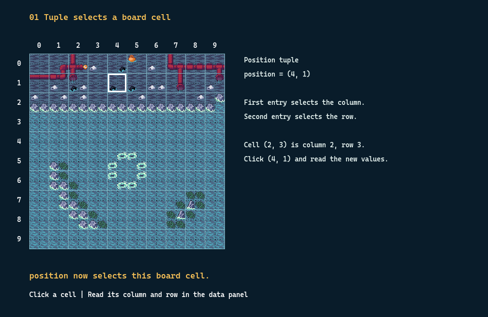
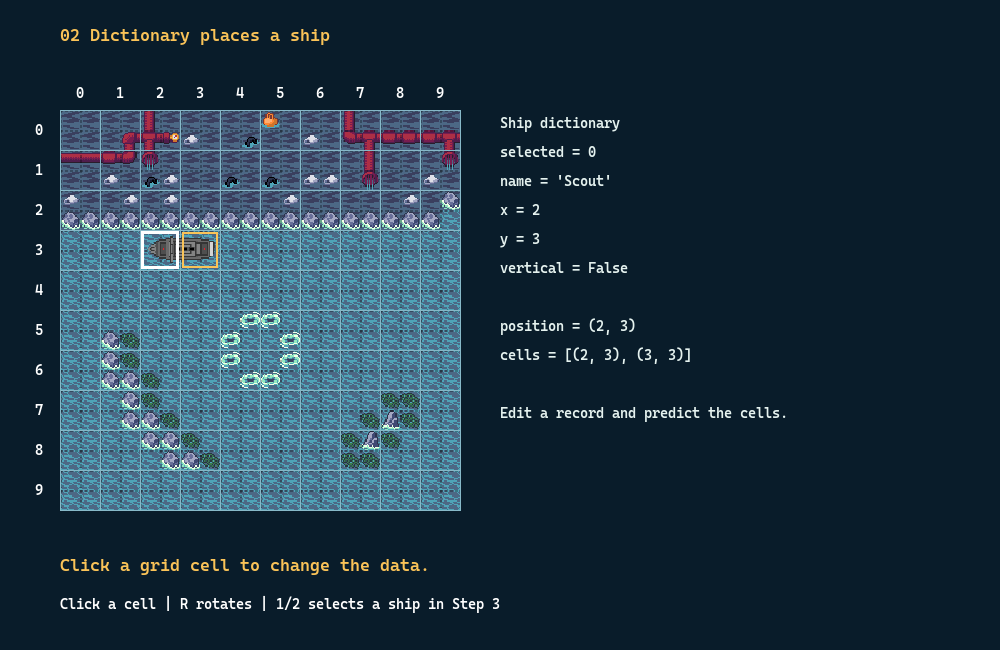

Battleship Lab · Day 2 · One core concept
Data structures
Use tuples, dictionaries and lists to place ships on a 10×10 board.
Define → Predict → Run → Explain · 120 minutes
Battleship Lab · Day 2 · One core concept
Use tuples, dictionaries and lists to place ships on a 10×10 board.
Define → Predict → Run → Explain · 120 minutes
A data structure organizes related values and gives us a way to access and update them.
One ship has several fields. A fleet has several ships. Their shapes should express those different relationships.
x = 2
y = 3
vertical = Falseship = {
'x': 2,
'y': 3,
'vertical': False,
}Named fields keep the values for one ship together.
| Structure | Definition | Game use |
|---|---|---|
| tuple | Ordered entries that cannot be replaced | One coordinate pair |
| list | Ordered entries that can be changed | Several ship records |
| dict | Values accessed by unique keys | Named fields of one ship |
A set is an optional extension for distinct values.

position = (4, 1)
print(position[0]) # column 4
print(position[1]) # row 1Click the board in 01_position.py and read the new tuple beside it.
position = (2, 3)
position = (3, position[1])
print(position) # (3, 3)Create and assign a new tuple to express a new position.
TypeError: tuple entries cannot be replaced.
names = ['Scout', 'Cruiser']
names.append('Carrier')
print(names[0]) # Scout
print(len(names)) # 3A list is an ordered sequence whose entries can be changed, added or removed.
ship = {'name': 'Scout', 'x': 2, 'y': 3}
print(ship['name']) # Scout
ship['x'] = ship['x'] + 1
print(ship['x']) # 3A dictionary maps unique keys to values. Here, keys describe fields.
| Expression | How it selects | Result in these examples |
|---|---|---|
| position[0] | Numbered tuple entry | 2 |
| names[0] | Numbered list entry | Scout |
| ship['x'] | Named dictionary field | 3 |
Lists preserve position; dictionary fields express meaning.
fleet = [
{'name': 'Scout', 'x': 2, 'y': 3},
{'name': 'Cruiser', 'x': 5, 'y': 6},
]
print(fleet[0]['name']) # Scout
fleet[1]['x'] = 6Read from left to right: choose a ship, then choose its field.
ship = {'name': 'Scout', 'x': 2, 'y': 3}
fleet = [ship, {'name': 'Cruiser', 'x': 5, 'y': 6}]
fleet[0]['x'] += 1
print(len(fleet))
print(fleet[0]['x'], fleet[1]['x'])
print(ship['x'])2
3 5
3
ship = {'x': 2}
fleet = [ship, ship]
fleet[0]['x'] = 3
print(fleet[1]['x']) # 3fleet = [{'x': 2}, {'x': 5}]
fleet[0]['x'] = 3
print(fleet[1]['x']) # 5cd teaching/days/day02
python data_structures.pyThis file needs only Python; no Pygame window opens.


ship['x'], ship['y'] = (4, 1)
ship['vertical'] = True
# Occupied cells become [(4, 1), (4, 2)]Save the working one-ship version.

selected = 1
ship = fleet[selected]
ship['x'], ship['y'] = (6, 2)Press 2 and click (6, 2). The Cruiser moves to three new cells.
Check that fleet[0] still covers (2, 3) and (3, 3).
| Need | Choice | Why |
|---|---|---|
| One x/y pair | tuple | Two ordered entries |
| One ship | dict | Fields have names |
| A fleet | list | Several ordered records |
| Unique target cells | set, optional | Duplicates are excluded |
targets = {(2, 3), (2, 3), (4, 1)}
print(len(targets)) # 2
print((2, 3) in targets) # TrueA set is a collection of distinct values without positional order.
Use set() for an empty set. {} is an empty dictionary.
| Code | Problem |
|---|---|
| ship['X'] | Different key from x: KeyError |
| fleet[2] with two ships | No third item: IndexError |
| position[0] = 3 | Cannot replace a tuple entry: TypeError |
| fleet = [ship, ship] | Two references to the same record |